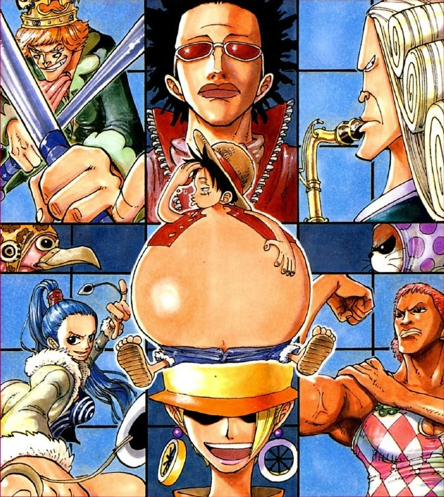

With a Log Pose now in hand, the Straw Hat Pirates are directed toward Whisky Peak, a town that welcomes pirates with open arms and treats them like celebrities. However, the townsfolk have a dark secret, and an even deeper mystery awaits.
A Mysterious Town, a Secret Organization, and a Beautiful Woman
The arc begins with the Straw Hat Crew out in the ocean in the starting leg of the Grand Line. They are quickly introduced to the abnormality of the place, as they experience the ever-changing weather and tides, which constantly keep the crew (save for a sleeping Zoro) on their toes. Eventually, the weather stabilizes and the crew spots an island on the horizon, and on it, the town Whisky Peak. Upon reaching the town, Mr. 9 and Miss Wednesday thank the crew and jump ship, much to the crew's confusion. Since the Log Pose needs time to reset, the crew have no choice but to dock at the mysterious island. Much to their surprise, the residents welcome them as if they are heroes. Soon they meet the town's leader, Igarappoi, who treats them to a party.
The crew quickly takes to the place, eating, drinking, and flirting (in Sanji and Usopp's case) into the night, until eventually they all fall asleep. However, Igarappoi, as well as a few other operatives in disguise, turn out to be agents of the elusive criminal syndicate, Baroque Works, but both Zoro and Nami had faked passing out, thwarting their surprise attack. This syndicate operates only with the assignments delegated to its agents by the leader, who, like every other member with the number agent status, remains secret and anonymous. When the town bounty hunters, the Millions, are discovered, they hunt and attempt to murder Zoro who, without much effort, picks them off little by little, leaving an anxious Mr. 8, Mr. 9, Miss Monday, and Miss Wednesday to be dealt with.
Zoro is then ambushed again by other bounty hunters, but quickly dispatches them, before overpowering Miss Monday.[3] He is then faced by Mr. 8, Mr. 9, and Miss Wednesday; the latter tries to hypnotize and attack Zoro, but she misses because of her mount, Karoo. After escaping Mr. 8, Zoro is found by Mr. 9, who restrains Zoro's left arm using an iron wire. Miss Wednesday then shows up holding Luffy hostage, but is then hit by Mr. 9, after Zoro uses him as a shield for Mr. 8's attack. Zoro then brings the final hit on Mr. 8, defeating him.
Soon after, Mr. 5 and his lady partner Miss Valentine arrive, but are not present to aid the other, less capable agents of the organization. They reveal that the leader of Baroque Works (Mr. 0) has discovered a spy, who has somehow successfully infiltrated the ranks, and that they have been sent to eliminate them.
The spies are none other than Igaram (Mr. 8, who used the alias Igarappoi as the town's leader) and Princess Nefertari Vivi (Miss Wednesday) of the Arabasta kingdom. Mr. 9 and Ms. Monday, despite being rather unaware of the situation to their own admission, decide to hold off the Mr. 5 pair so that Vivi can escape, but are swiftly defeated.
In a twist of fate, the pirates that Vivi was meant to kill in her role as a double agent are now her protectors, when Igaram promises Nami Beli1,000,000,000 to ensure her safety back to Arabasta. Zoro comes to Vivi's rescue, however, Luffy arrives at the scene and attacks him, mistakenly believing that the townsfolk Zoro killed were actually friendly. After fighting for a bit, they unintentionally defeat the pair of agents and stop fighting when they are smacked by Nami.
At this point, Vivi explains that her kingdom is falling to ruin, as a civil war has been devised by Baroque Works, and that if she can confront the rebel army with the information on the true cause of the war, she can end it. The leader of Baroque Works, according to her, wants to take over Arabasta and turn it into an "ideal nation" ruled by him, and she reveals the leader to be Crocodile of the Seven Warlords of the Sea. Unfortunately, by revealing his name, Luffy, Zoro, and Nami are added to the Baroque Works hit list by the nearby Mr. 13, causing Nami to throttle her. Afterwards, Igaram appears dressed as Vivi and explains that he will act as a decoy. He departs from Whisky Peak, only to have his ship be blown up as soon as he leaves, seemingly killing him.
The Straw Hats and Vivi run to the Going Merry only to find Miss All Sunday, the highest ranking female Baroque Works agent, waiting for them. As it turns out, she was the one who let Vivi find out the boss's identity, yet she was also the one who revealed that she and Igaram were double agents and blew up the ship, so the crew is unsure of what side she is on. Ms. All Sunday gives them an Eternal Pose (a permanent Log Pose) to Nanimonai Island, which is supposedly very close to Arabasta, but Luffy destroys it, claiming that she does not decide their course. As Ms. All Sunday leaves, the crew leave for Little Garden, the next island of the Grand Line.